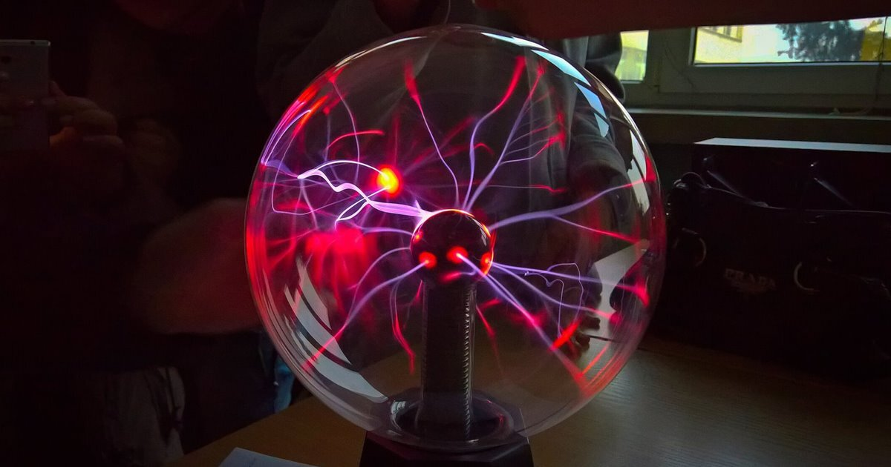

Esfera de Plasma
Un viaje fascinante al mundo de la física y la electricidad

COMENZAR
INTRODUCCIÓN
¿Qué es una lámpara de plasma?
¿Cómo funciona una lámpara de plasma?
¿Para qué sirve una lámpara de plasma?
OBJETIVOS DEL PROYECTO
Objetivo General
Objetivos Específicos
FUNDAMENTO TEÓRICO
NIKOLA TESLA
BOLA DE PLASMA
MATERIALES Y HERRAMIENTAS
Materiales Necesarios
Herramientas Requeridas
PROCEDIMIENTO
Pasos para la Construcción
Medidas de Seguridad
ESQUEMA
Diagrama del Circuito
CONCLUSIONES
Logros y Aprendizajes
Recomendaciones
×